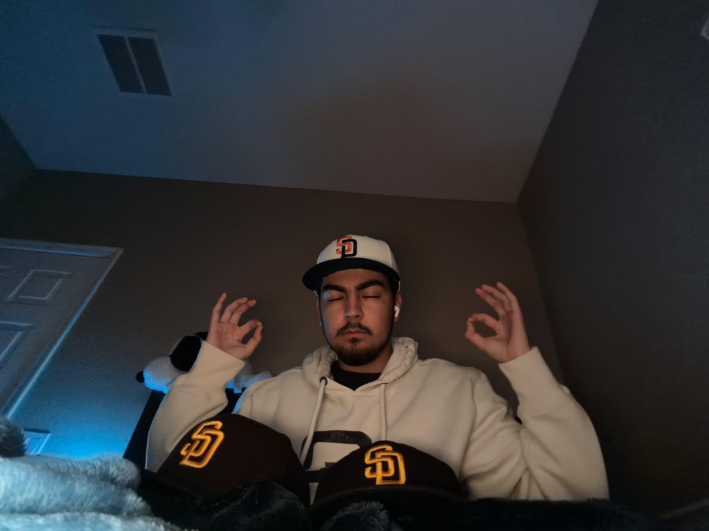
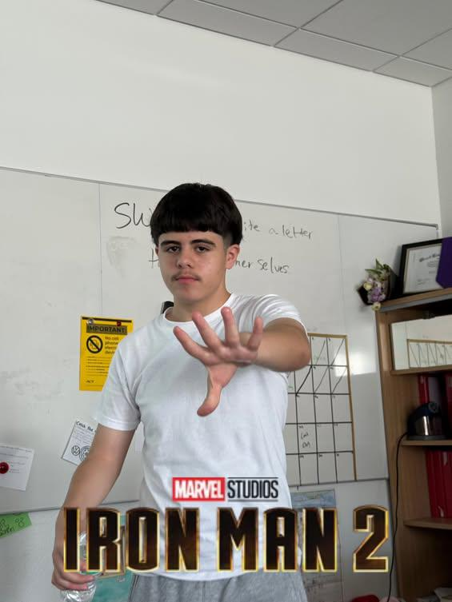
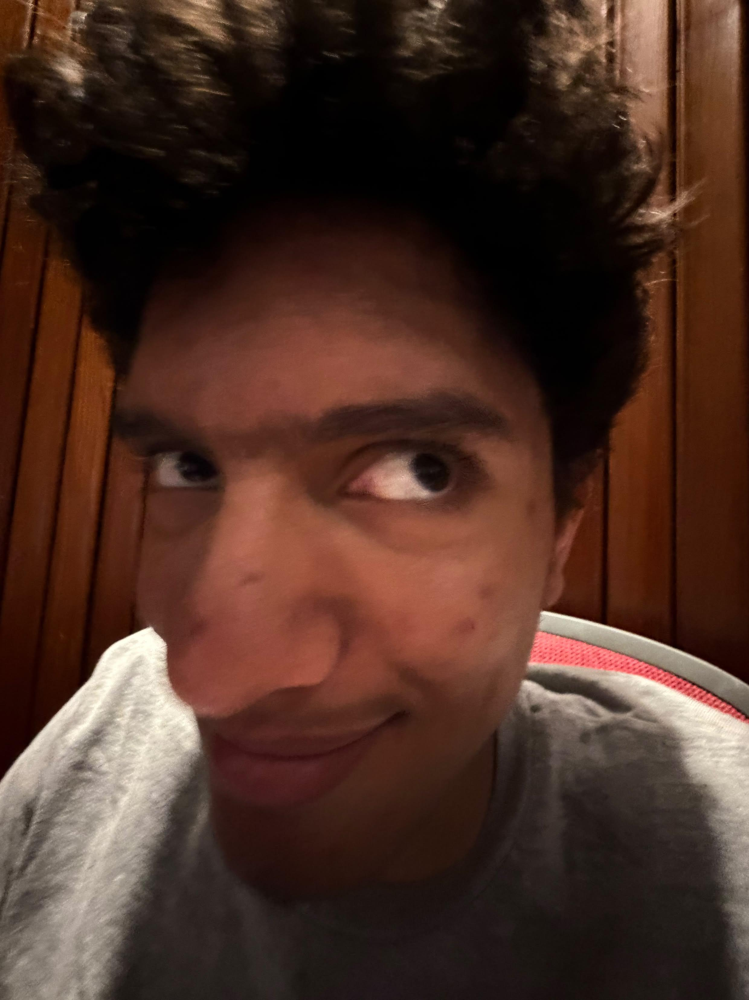

Description
This guy is very shy. but once he's with his friends he starts to be chaotic. He also likes to plan ideas
to the point where it can be dangerous but he's a fun guy to be with.
He also likes
- K-on,
- Baseball
- Ted Lasso
- Basketball

Description
This actor perfers to be alone because he wants to focus on soccer. Once he becomes the actor,
he becomes one of the most silliest person of the series along with the main character.

Description
This main character is very energetic and sometimes short tepmered but he always find a way to screw
people up. He Especialy loves to be with his friends, and when he's not with his friends he'll be
depressed, but most of the time he will play some games because he has nothing to do with his free time.

Description
This guy is yelling at me as your reading this because he's a hater. This guy CAN'T beat Tartarus even
though his best run was 32%. Sergio's not sure though. It could be higher, but he still isn't on Tartarus at this moment
because it's hard for him. He also does Photography for Business. Down below is his schedule.